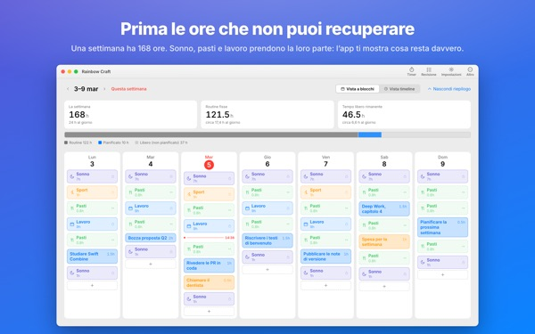
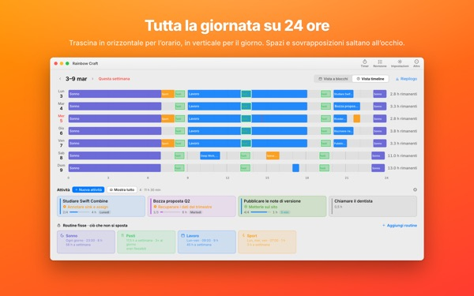
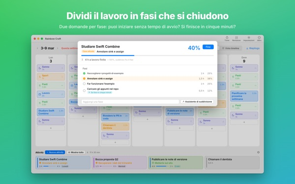
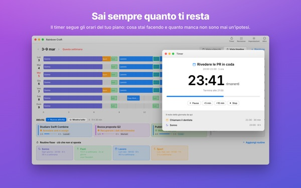
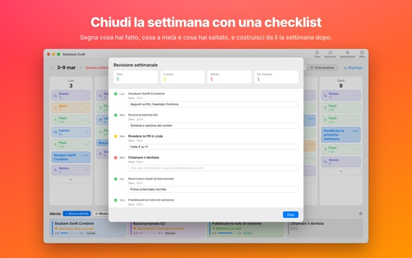

Ci sta davvero tutto
in questa settimana?
Rainbow Craft distende la tua settimana per giorni e ore sul Mac. Parti dal tempo a cui non puoi rinunciare, come sonno, pasti e lavoro, trascina le attività negli spazi rimasti e guarda cosa ci sta davvero.
Pianificazione, routine, attività, revisione, timer e importazione del calendario sono gratis.

Pianifica una settimana qui
Abbiamo messo le quattro routine che l’app propone alla prima apertura. Attivale e disattivale, poi posa le attività sui giorni.
La lista si allunga, la settimana no.
Un elenco di cose da fare non ti dice se la tua settimana ce la fa a contenerlo. Quando sonno, pasti e spostamenti si sono presi la loro parte, resta meno di quanto pensi. Rainbow Craft ti mostra quelle ore in numeri e caselle, e ti fa provare ogni attività in uno spazio vero.
Una giornata su un righello di 24 ore
La vista timeline stende la giornata su un righello di 24 ore. Buchi e sovrapposizioni saltano all’occhio, e scegli tu come disporre gli impegni che si accavallano.
Importa riunioni e appuntamenti da Calendario sul Mac invece di riscriverli. Se vuoi, i piani possono finire anche in un calendario Rainbow Craft separato, visibile sull’iPhone. Gli altri calendari non vengono mai toccati.

Spezza i lavori grossi in passi che si chiudono
I lavori grossi si bloccano quando qualcosa è ancora d’intralcio. L’app fa due domande su ogni passo: puoi iniziare senza riscaldamento? Lo finisci in cinque minuti?
Ciò che passa entrambe è un frammento da prendere appena si liberano cinque minuti. Il resto richiede tempo dedicato. Se l’app sbaglia, decidi tu.

Cosa stai facendo, e quanto manca
All’ora d’inizio il piano passa a in corso, e allo scadere l’app ti chiede se hai finito. Il timer segue il tuo programma.
Il widget Timer attuale mostra l’attività del momento e il tempo rimasto senza aprire l’app.

Chiudi la settimana con una checklist
La revisione settimanale è una scheda per giorno. Segna cosa hai fatto, fatto a metà o saltato, e usalo per pianificare la settimana dopo.
Con lo stesso account iCloud le attività passano tra questa app e Rainbow of Desire su iPhone: la giornata pianificata sul Mac viene con te.

Si comincia in tre passi
- 1
Fissa le ore che non si toccano
Ciò che torna ogni settimana, come dormire, mangiare e lavorare, diventa una routine. L’app non compila nulla al posto tuo.
- 2
Scrivi le attività
Una per riga in Attività, in basso. Per ora non serve decidere quando.
- 3
Trascinale sui giorni
Posata su un giorno, diventa un piano. Cambia la data? Trascinala su un altro giorno o di nuovo nell’elenco.
I conti con le routine proposte
- Una settimana
- 168 ore
- Sonno · 8 ore al giorno
- 56 ore
- Pasti · tre al giorno
- 17,5 ore
- Lavoro · scuola · 9 ore nei giorni feriali
- 45 ore
- Sport · 1 ora lun, mer, ven
- 3 ore
- Tempo che hai davvero questa settimana
- 46,5 ore
Sono solo proposte. Scegli e adatta le routine alla tua vita. Nei giorni di ferie o di viaggio, togli il lavoro solo da quel giorno.
Tutto ciò che serve per vivere questa settimana è gratis
Gratis
- Piani della settimana e del giorno, routine e attività senza limiti
- Vista timeline e suddivisione in passi
- Revisione settimanale, copiabile come testo
- Timer e widget Timer attuale
- Importazione del calendario
- Sincronizzazione con Rainbow of Desire su iPhone
- Tendenze delle ultime 2 settimane
Plus · Pro
- Plus: tendenze di 8 settimane, i tuoi giorni e orari migliori
- Plus: previsto e reale a confronto
- Plus: riporta in un colpo il piano di una settimana riuscita
- Pro: tutto Plus, più la condivisione del programma con un link di sola lettura
- Pro: un solo acquisto sblocca Pro anche nell’app per iPhone
Ogni livello come abbonamento annuale o acquisto unico a vita
Trovi i prezzi nell’app e sull’App Store. L’abbonamento annuale si rinnova da solo se non lo disdici almeno 24 ore prima della fine del periodo. Il Pro comprato su iPhone vale anche su un Mac con lo stesso account iCloud.
Domande frequenti
Devo per forza accedere a iCloud?
No, se usi l’app solo sul Mac. Serve per sincronizzare con l’iPhone e per condividere il programma.
L’app modifica i miei calendari?
Mai quelli che hai già. L’importazione legge soltanto i calendari che scegli. Se attivi la scrittura dei piani nel calendario Rainbow Craft, l’app crea quel calendario a parte e scrive solo lì. Puoi eliminarlo quando vuoi dall’app Calendario.
Le attività scritte sul Mac non compaiono sull’iPhone.
Controlla che entrambi i dispositivi usino lo stesso account iCloud e che sull’iPhone sia installata Rainbow of Desire. La sincronizzazione passa da iCloud e può richiedere qualche minuto.
Chiudendo la finestra si chiude l’app?
No. L’app resta aperta. Riapri la finestra dal menu Finestra o facendo clic sull’icona nel Dock.
Con un aggiornamento cosa succede ad attività e piani?
Restano esattamente come sono. Gli aggiornamenti non cambiano né cancellano ciò che hai scritto.
Come cambio la lingua dell’app?
Sceglila in cima alle Impostazioni, sotto Language · 언어 · 語言, e l’app si riapre in quella lingua. Le lingue sono 23. I nomi delle routine e le attività scritte da te non vengono tradotti.
Ho cambiato Mac e non ho più Plus o Pro.
Accedi con lo stesso Account Apple e fai clic su Ripristina acquisto nelle Impostazioni. Per disdire, usa le impostazioni dell’account nell’App Store.
Dove finisce quello che scrivo?
Niente account, niente registrazione, nessun server dello sviluppatore con i tuoi piani. Quello che scrivi resta sui tuoi dispositivi e nel tuo iCloud. L’app invia statistiche d’uso anonime che non contengono mai ciò che scrivi, e puoi disattivarle nelle Impostazioni con Invia statistiche di utilizzo anonime.
Ti sei bloccato o qualcosa non torna? Scrivi a mizzking75@gmail.com. Anche nelle Impostazioni dell’app c’è una voce per contattarci.